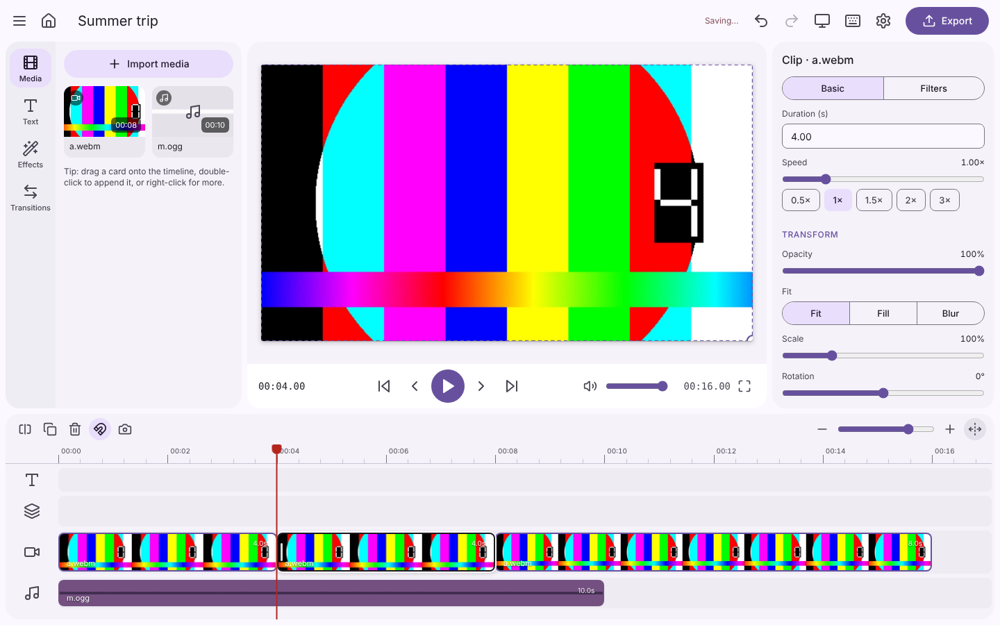
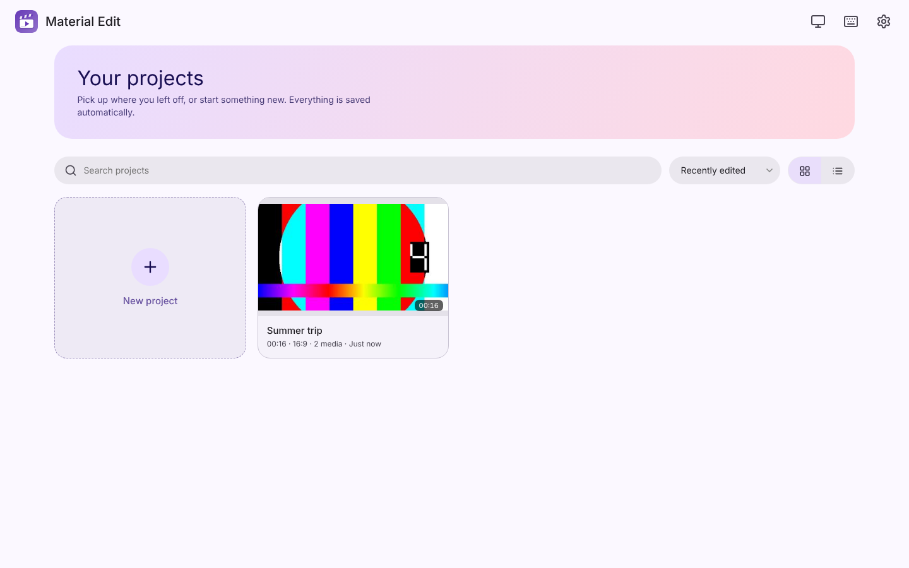
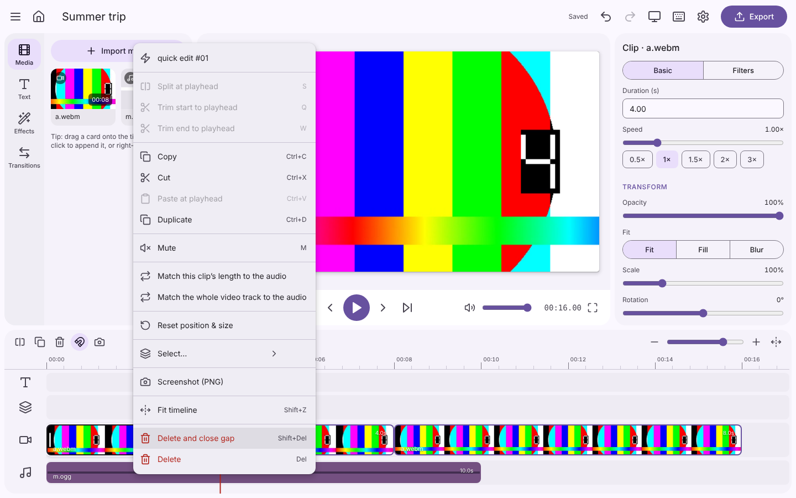
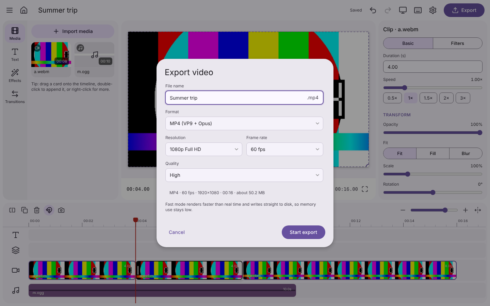
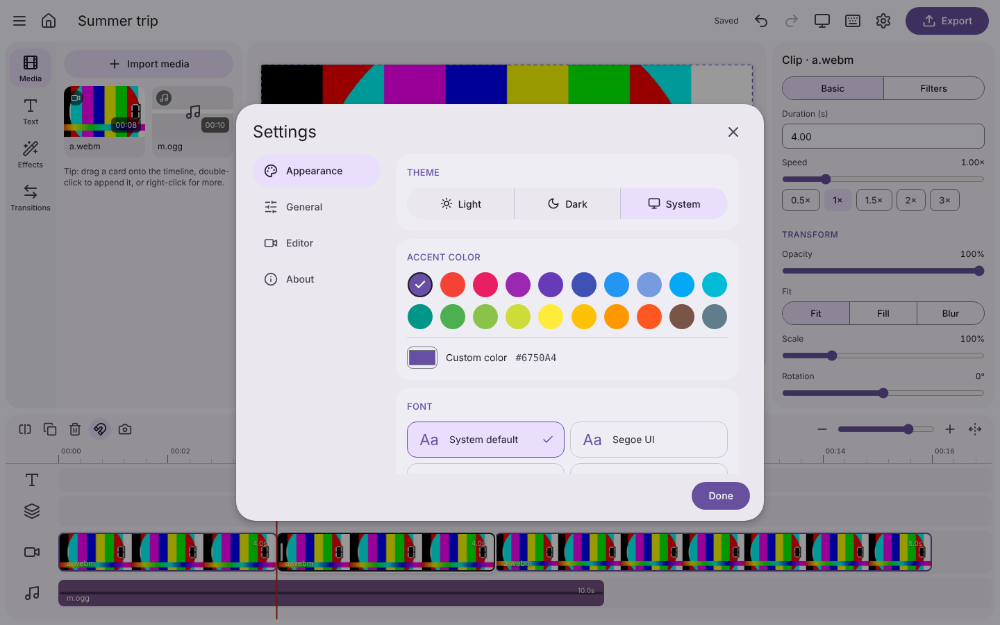

Multi-track timeline
Text, overlay, main and audio tracks with snapping, zoom, rubber-band selection and ripple editing.
Cut, arrange, add text, filters and music on a multi-track timeline, then export a crisp MP4 — fast, light and beautiful on your desktop.

A focused toolset with smooth motion and a clean, responsive interface.
Text, overlay, main and audio tracks with snapping, zoom, rubber-band selection and ripple editing.
Cut at the playhead, trim either side, change speed and match clip length to your music.
Ready-made looks, fades, slides, wipes and zooms — adjust brightness, contrast, blur and more.
Animated titles and captions, picture-in-picture overlays, fades and transforms on the preview.
Hardware-accelerated MP4 up to 4K 60 fps, streamed to disk so memory stays flat on long videos.
Light, dark or system theme, Material colors, 10 UI fonts and window-size memory.
The language of your device is detected automatically — switch any time in Settings.
Autosave, search, sort, rename and duplicate projects right from the home screen.
Material Design 3 everywhere — from the project library to export.




Free forever and open source. Download the installer and start editing in a minute.
Installer: download/Material-Edit_1.0.0_x64-setup.exe · Windows 10/11 (64-bit)